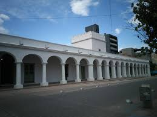
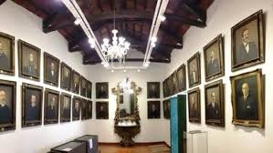

MUSEOS EN JUJUY
Jujuy alberga una variedad de museos que reflejan su rica historia y cultura. A continuación, se presentan algunos de los más destacados:
CABILDO DE JUJUY

MUSEO ARQUEOLOGICO EDUARDO CASANOVA
MUSEO HISTORICO PROVINCIAL "JUAN GALO LAVALLE"

MUSEO POSTA DE HORNILLOS
MUSEO DE ARTESACRO SAN FRANCISCO
MUSEO SOTO AVENDAÑO